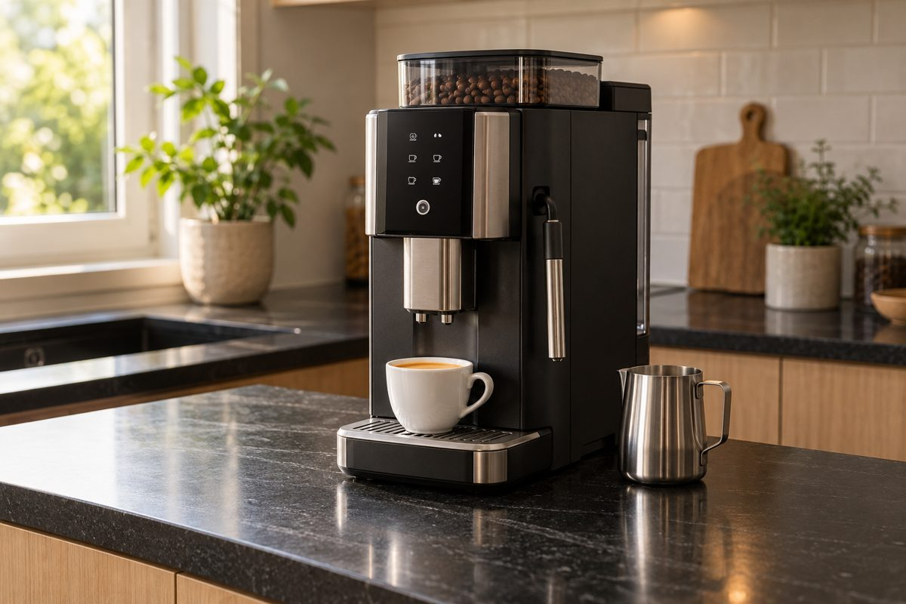
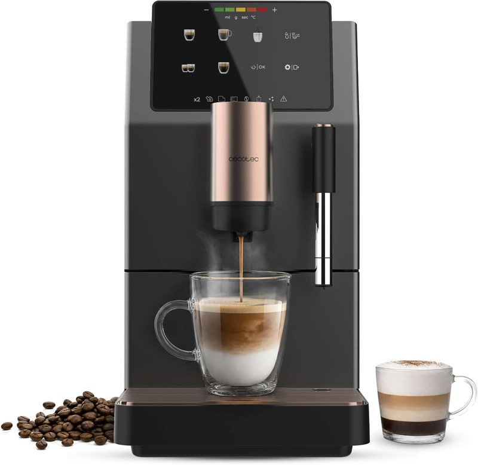
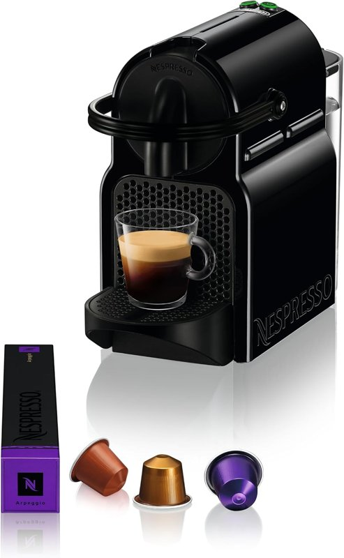
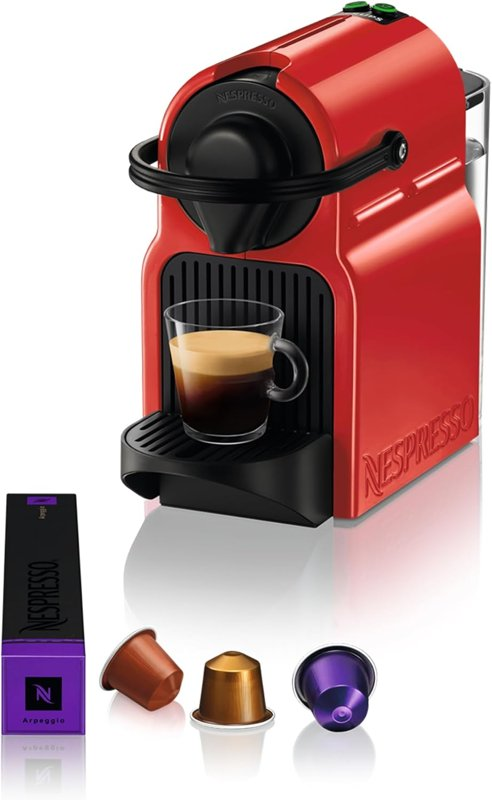
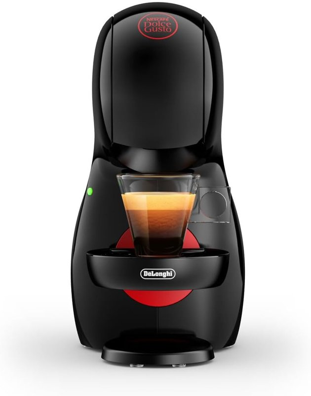
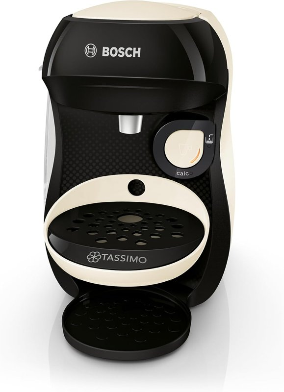
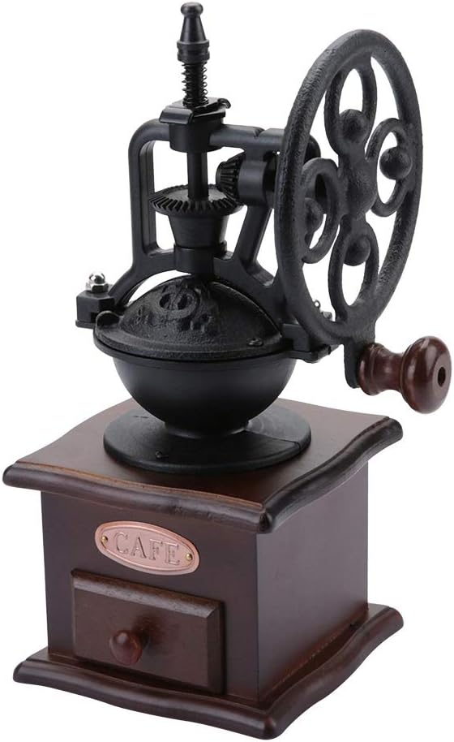
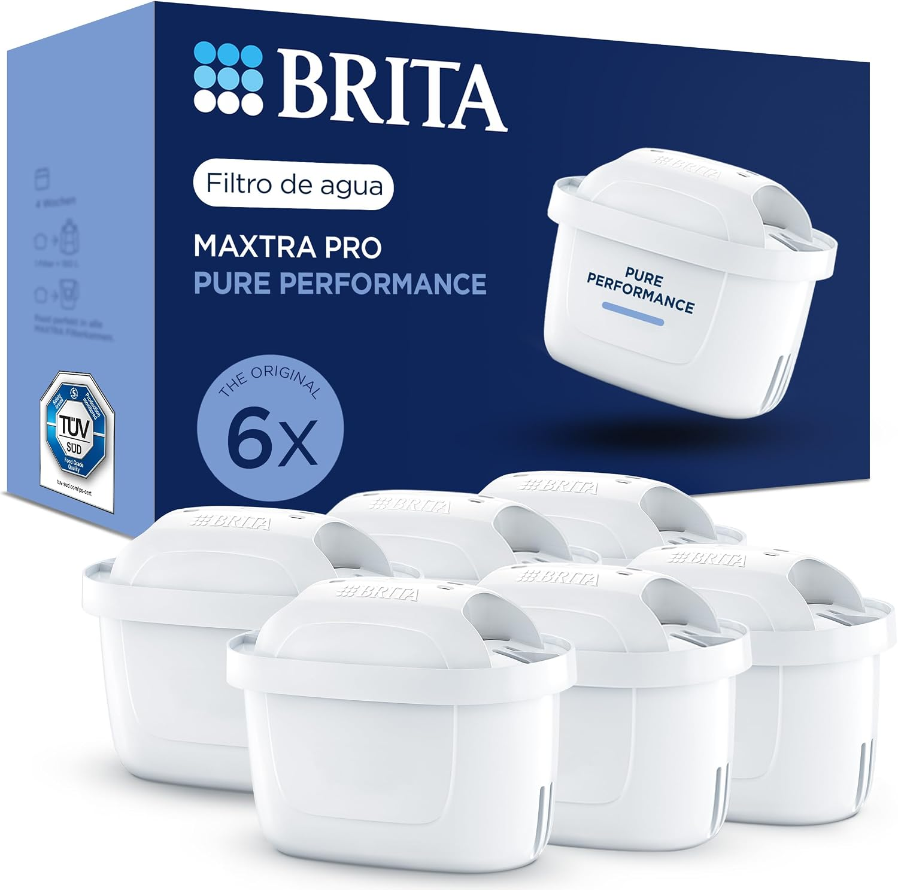
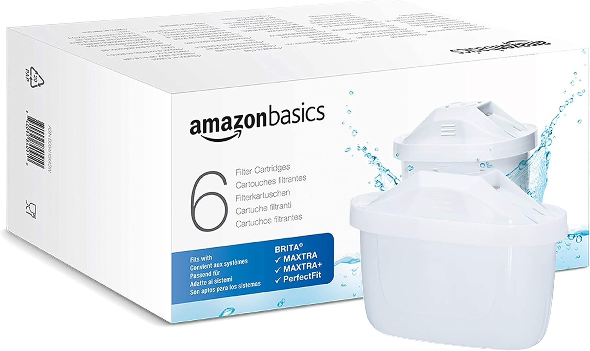

Cafeteras
Superautomáticas, de cápsulas, un molinillo manual y filtros de agua para la jarra.
Por el equipo de Casa y Comparativa · actualizado el 20 nov 2026
Aviso de afiliados: En calidad de Afiliado de Amazon, obtenemos ingresos por las compras adscritas que cumplen los requisitos aplicables. Si compras desde nuestros enlaces, no te cuesta más. Las cafeteras y los dos filtros de agua de esta página los vende Amazon. El molinillo lo vende DedalanW y lo envía Amazon. Precios y disponibilidad cambian: revisa la ficha de Amazon antes de comprar.

- De cápsulas, sencilla y con Prime: De'Longhi Inissia EN80.B (79,00 €), cápsulas Nespresso Original.
- La que tenemos en casa: Krups Nespresso Inissia roja (95,46 €; versión para Francia).
- Aún más económicas: Dolce Gusto Piccolo XS (59,00 €) o Tassimo Happy (34,99 €), cada una con sus propias cápsulas.
- Superautomática con vaporizador: Cecotec Cremmaet Stretta Steam (229,00 €). Ojo: modelo nuevo, solo 2 opiniones y sin Prime. Llega antes (30 oct, sin Prime): De'Longhi Magnifica S con filtro (291,99 €).
- Molinillo manual vintage: Zerodis, con el aire de los molinillos de nuestros abuelos; caja de madera, hierro fundido y núcleo cerámico (46,83 €). Lo vende DedalanW y lo envía Amazon.
- Filtros de la jarra, no de la cafetera: BRITA MAXTRA PRO All-in-1, pack de 6 (32,28 €), o Amazon Basics, pack de 6 (15,67 €), compatible con jarras Brita según su ficha. Precios del 20 nov 2026, 10:49 (hora de Madrid).
Superautomática

Cecotec Cremmaet Stretta Steam
- Superautomática: del grano a la taza, con molinillo integrado (niveles de molienda: sin dato)
- Bomba de 19 bares; hasta 1500 W
- Depósito de agua de 1,1 L y de café en grano de 150 g; dosis de 7 a 12 g
- Vaporizador para espumar leche
- Pantalla táctil: espresso, americano, lungo, doble y agua caliente
- Limpieza, enjuague y descalcificación automáticos; unidad de infusión extraíble
- 34,5 × 19 × 40 cm (fondo × ancho × alto); 8,01 kg
- 5,0 sobre 5, pero solo 2 opiniones (es un modelo nuevo de 2026)
- Entrega gratis el 3 nov a Madrid; sin Prime
Datos de la ficha de Amazon.es (28 oct 2026). No tenía el aviso de «devuelto con frecuencia». Garantía: la ficha indica 3 años; piezas de recambio en la UE durante 10 años, según la ficha.
Lo que nos cuenta quien la usa
En casa usamos la Cremmaet Compact Steam, de la misma familia de Cecotec. La Compact Steam no está disponible ahora vendida por Amazon con una entrega razonable (tarda meses), así que proponemos la Stretta Steam. Según sus fichas de Amazon, las dos son superautomáticas con 19 bares, depósito de 150 g de café en grano, 1,1 L de agua y vaporizador.
- Una luz suave: la nuestra tiene un botón que enciende una luz tenue. Por la mañana no hace falta encender la luz de la cocina, y a quien le molesta la luz fuerte nada más despertarse lo agradece.
- Nuestra rutina: la encendemos, vamos al baño mientras se calienta el agua y, al volver, está lista.
Ojo: lo de la luz es de la Compact Steam que usamos. En la ficha de la Stretta Steam no aparece, así que si la tiene: sin dato.
Si no quieres esperar

De'Longhi Magnifica S ECAM22.110.B + filtro antical
- Superautomática: café en grano o molido
- Molinillo con 13 niveles
- Vaporizador manual 2 en 1: leche caliente o espuma
- 15 bares
- Aclarado y descalcificación automáticos
- Incluye filtro antical DLSC002
- Tazas de 8,6 a 14,2 cm de alto
- 4,5 sobre 5 con 758 opiniones (de este pack con filtro)
- Sin Prime, pero llega el vie 30 oct (antes que la Cecotec)
Datos de la ficha de Amazon.es (28 oct 2026, hacia las 21:30, entrega en Madrid). No tiene Prime, pero llega el 30 oct, antes que la Stretta Steam, y tiene muchas más opiniones; cuesta algo más. Si te gusta Cecotec y no tienes prisa, la Stretta Steam sigue siendo buena opción.
De cápsulas

Nespresso De'Longhi Inissia EN80.B
- Cápsulas Nespresso Original; 19 bares
- Espresso (40 ml) y largo (110 ml), programables
- Lista en 25 segundos
- Depósito de agua extraíble de 0,7 L
- Hasta 11 cápsulas usadas
- Se apaga sola a los 9 minutos
- 4,4 sobre 5 con 52.550 opiniones (de todas las versiones de color de la ficha)
- Con Prime, entrega gratis al día siguiente (29 oct, a Madrid)
Datos de la ficha de Amazon.es (28 oct 2026, hacia las 21:30, entrega en Madrid). Es la que recomendamos: la misma Inissia que tenemos en casa, con las mismas cápsulas, más barata y con muchas más opiniones.

Krups Nespresso Inissia roja (YY1531FD)
- De cápsulas Nespresso Original; 2 botones: espresso (40 ml) y café largo (110 ml), programables
- Bomba de 19 bares; 1260 W
- Lista en 25 segundos
- Depósito de agua extraíble de 0,7 L
- Bandeja para 9-11 cápsulas usadas
- Se pone en reposo sola a los 9 minutos sin usarla
- 2,4 kg
- 4,5 sobre 5 con 9.472 opiniones (la ficha puede agrupar varias versiones)
- Con Prime, entrega gratis al día siguiente (29 oct, a Madrid)
Ojo: es la nuestra, pero la unidad que vende Amazon es la versión para Francia (YY1531FD). La oferta de cápsulas gratis que sale en sus fotos es de Nespresso Francia y no vale en España. Idioma del manual y de la caja: sin dato. Por eso recomendamos antes la De'Longhi.
En casa tenemos una Nespresso roja de Krups, de dos botones, como esta: uno para el espresso y otro para el café largo. Pones la cápsula, pulsas y listo.
Datos de la ficha de Amazon.es (28 oct 2026, 21:22). Garantía: la ficha indica 2 años y 15 años de reparabilidad.
Opciones más económicas
Un buen café no tiene por qué ser caro: hay opciones buenas para cada bolsillo.
Ojo con las cápsulas: la De'Longhi Inissia y la Krups usan Nespresso Original. La Piccolo XS usa solo cápsulas Dolce Gusto y la Tassimo, solo cápsulas Tassimo (T DISC). No son intercambiables.
Truco de casa: si tienes una cafetera Nespresso (como la Krups o la De'Longhi Inissia), en supermercados como Lidl, Aldi o Carrefour encuentras cápsulas compatibles con Nespresso, de marcas conocidas y de marca blanca. Sirven para cualquier cafetera de ese tipo. En casa las usamos y nos salen bastante más baratas que las originales (en nuestra experiencia, alrededor de un 40 % menos). Las Dolce Gusto y las Tassimo usan otras cápsulas distintas.

De'Longhi Nescafé Dolce Gusto Piccolo XS EDG210.B
- Usa cápsulas Dolce Gusto (no sirven las Nespresso); 15 bares
- Manual: la palanca decide la cantidad
- Depósito de agua extraíble de 0,8 L
- Bandeja ajustable para tazas o vasos
- 4,4 sobre 5 con 10.042 opiniones
- Con Prime, entrega gratis el vie 30 oct (a Madrid)

Bosch Tassimo Happy TAS107E
- Usa cápsulas Tassimo (T DISC), no Nespresso ni Dolce Gusto; más de 70 bebidas
- Un botón (OneTouch)
- Depósito de agua de 0,7 L
- Soporte de taza ajustable y extraíble
- Programa de limpieza y descalcificación
- 4,3 sobre 5 con 1.743 opiniones (de todos los colores)
- Con Prime, entrega gratis al día siguiente (29 oct, a Madrid)
Datos de las fichas de Amazon.es (28 oct 2026, hacia las 21:30, entrega en Madrid). Las dos las vende Amazon, con Prime y sin el aviso de «devuelto con frecuencia».
Molinillos de café
Para los amantes de lo vintage: un molinillo como el que tenían nuestros abuelos en la cocina, con caja de madera y manivela, para moler el café a mano y recuperar ese aroma de antes.

Zerodis, molinillo de café manual vintage
- Molinillo de café manual, de diseño retro y aire vintage, según la ficha
- Caja de madera de haya, cubierta de hierro fundido y núcleo cerámico, según la ficha; engranaje de nailon
- Grosor de la molienda ajustable (ajustador poligonal)
- 11,2 × 11,5 × 27 cm; peso aprox. 1.177 g, según la ficha
- Capacidad del depósito: sin dato
- La ficha indica que también puede moler especias, frutos secos o hierbas; el manual viene en inglés
- 4,6 sobre 5, pero solo con 8 opiniones
- En stock; entrega gratis anunciada el viernes 20 de noviembre, según la ficha (el plazo puede variar según el código postal). En la ficha no aparece Prime
Por qué lo recomendamos. Lo aconsejamos a quien disfruta del ritual de moler el café a mano y del aroma del café recién molido, y a los amantes de lo vintage: su diseño retro recuerda a los molinillos que tenían nuestros abuelos en la cocina. Según la ficha, el grosor de la molienda se puede ajustar para distintos métodos de preparación, y es un compañero de cafeteras y de cafeteras espresso. También es un objeto decorativo para la cocina, con caja de madera de haya, cubierta de hierro fundido y núcleo cerámico.
No es para quien busca rapidez o prefiere no hacer el esfuerzo de moler a mano: es un molinillo manual, de manivela. La capacidad del depósito no aparece en la ficha (sin dato), así que tampoco lo señalaríamos como la mejor opción si necesitas moler mucha cantidad de una vez.
Datos de la ficha de Amazon.es (15 nov 2026, 20:27, hora de Madrid). El título lo presenta como molinillo de café; no como molinillo solo de especias. Lo vende DedalanW y el envío sale desde Amazon. La recomendación se basa en esa ficha, no en una prueba nuestra en casa.
Filtros de agua para la cafetera: ¿Brita o Amazon Basics?
Estos cartuchos van en la jarra de agua, no dentro de la cafetera: filtras el agua y luego la echas en el depósito. Así el agua entra con menos cal, cloro y otras impurezas, según las fichas. El filtro no quita la cal que ya se ha acumulado en la cafetera; eso lo hace un antical.
Comparamos el recambio original BRITA MAXTRA PRO All-in-1 (pack de 6) con el pack de 6 de Amazon Basics. No decimos que sean lo mismo. Según la ficha de Amazon Basics, son «aptos y compatibles con todas las jarras BRITA, incl. PerfectFit, y jarras Amazon Basic», y «se adaptan a todos los sistemas de filtro de agua BRITA nuevos y antiguos».

BRITA MAXTRA PRO Pure Performance (All-in-1), pack 6
- Pack de 6 cartuchos MAXTRA PRO All-in-1
- Según la ficha, recambio original para todas las jarras BRITA y BRITA Flow, con el sistema PerfectFit
- La ficha indica que reduce PFAS, cloro, cal y metales, y lo recomienda también para bebidas calientes
- 5,38 € por cartucho (32,28 € el pack)
- 4,7 sobre 5, con 18.278 valoraciones
- En stock, con Prime, según la ficha (entrega en Madrid 28020)

Amazon Basics, cartuchos filtrantes, pack 6
- Pack de 6 cartuchos para la jarra
- Según su ficha: «aptos y compatibles con todas las jarras BRITA, incl. PerfectFit, y jarras Amazon Basic»
- También, según la ficha, «se adaptan a todos los sistemas de filtro de agua BRITA nuevos y antiguos»
- La ficha indica que reduce el cloro, la cal y otras impurezas; certificado TÜV y libre de BPA; sustituir cada 30 días o después de 150 L, según la dureza del agua
- 2,61 € por cartucho (15,67 € el pack)
- 4,5 sobre 5, con 17.986 valoraciones
- En stock, con Prime, según la ficha (entrega en Madrid 28020)
Datos de las fichas de Amazon.es, consultadas el 20 nov 2026 a las 10:49 (hora de Madrid), con entrega en Madrid 28020 y precio con IVA. Oferta nueva (no de segunda mano). En ambas fichas, «Remitente / Vendedor: Amazon». A las 11:15 volvimos a mirar, con la misma entrega: las fichas completas no cargaron, pero en la página «Sigue comprando» de Amazon seguían saliendo 32,28 € y 15,67 €. No hemos hecho una prueba de filtrado en casa: comparamos precio por cartucho y lo que declara cada ficha.
Todas, de un vistazo
| Modelo | Tipo | Precio | Prime | Opiniones |
|---|---|---|---|---|
| De'Longhi Inissia | Cápsulas Nespresso Original | 79,00 € | Sí | 4,4 (52.550) |
| Krups Nespresso Inissia | Cápsulas Nespresso Original | 95,46 € | Sí | 4,5 (9.472) |
| De'Longhi Piccolo XS | Cápsulas Dolce Gusto | 59,00 € | Sí | 4,4 (10.042) |
| Bosch Tassimo Happy | Cápsulas Tassimo | 34,99 € | Sí | 4,3 (1.743) |
| Cecotec Stretta Steam | Superautomática (grano) | 229,00 € | No | 5,0 (2) |
| De'Longhi Magnifica S | Superautomática (grano) | 291,99 € | No (llega el 30 oct) | 4,5 (758) |
| Zerodis, molinillo manual | Molinillo de café manual | 46,83 € | No aparece | 4,6 (8) |
| BRITA MAXTRA PRO All-in-1, pack 6 | Filtro de jarra (recambio original) | 32,28 € | Sí | 4,7 (18.278) |
| Amazon Basics, filtros, pack 6 | Filtro de jarra (compatible con jarras Brita, según su ficha) | 15,67 € | Sí | 4,5 (17.986) |
Precios de las cafeteras, del 28 oct 2026. Precio del molinillo, del 15 nov 2026, 20:27 (hora de Madrid). Precios de los filtros, del 20 nov 2026, 10:49 (hora de Madrid). Pueden cambiar. Los bares que dan las fichas (15 o 19) no son una medida de calidad: más bares no significa mejor café.
Preguntas rápidas
¿Superautomática o de cápsulas?
La superautomática muele el grano y prepara el café con un toque; esta, además, tiene vaporizador para la leche. La de cápsulas es más pequeña y más barata: pones la cápsula y pulsas.
¿Qué cápsulas usa cada una?
Según sus fichas: la Krups y la De'Longhi Inissia, Nespresso Original; la Piccolo XS, Dolce Gusto; la Tassimo, cápsulas Tassimo (T DISC). No son intercambiables entre sistemas.
¿Tienen Prime?
Con Prime (28 oct 2026, entrega en Madrid): la De'Longhi Inissia, la Piccolo XS y la Tassimo (comprobado hacia las 21:30) y la Krups (hacia las 21:22). Sin Prime: la Stretta Steam, que llega el 3 de noviembre (comprobado hacia las 20:45), y la Magnifica S, que llega el 30 de octubre (hacia las 21:30). Ahora mismo no hay en esta página ninguna superautomática con Prime. Las cafeteras las vende Amazon. El molinillo manual no muestra Prime en la ficha del 15 nov 2026 (20:27, hora de Madrid); lo vende DedalanW y lo envía Amazon. Los dos filtros de jarra (BRITA y Amazon Basics) aparecen con Prime en las fichas del 20 nov 2026, 10:49 (hora de Madrid; entrega en Madrid 28020).
¿Más bares es mejor café?
No. Las fichas dan 15 o 19 bares, pero más bares no significa mejor café.
¿Cuántas opiniones tienen?
La De'Longhi Inissia, 52.550 (4,4 sobre 5; de todas las versiones de color de la ficha). La Krups, 9.472 (4,5; la ficha puede agrupar varias versiones). La Piccolo XS, 10.042 y la Tassimo, 1.743. La Magnifica S con filtro, 758 (4,5). La Stretta Steam, solo 2 (5,0 sobre 5): es un modelo nuevo. El molinillo manual Zerodis, 8 (4,6 sobre 5), comprobado el 15 nov 2026. Los filtros BRITA MAXTRA PRO All-in-1 pack 6, 18.278 (4,7 sobre 5), y los Amazon Basics pack 6, 17.986 (4,5 sobre 5), comprobados el 20 nov 2026 a las 10:49 (hora de Madrid). Iremos actualizando.
¿El molinillo es de café o de especias?
La ficha de Amazon lo presenta como molinillo de café manual, de hierro fundido y núcleo cerámico. También indica que puede moler especias, frutos secos o hierbas. Lo incluimos aquí como molinillo de café.
¿El filtro de la jarra quita la cal de la cafetera?
No. El cartucho va en la jarra: filtra el agua que después echas en la cafetera y, según las fichas, ayuda a que entre con menos cal. No quita la cal que ya se ha acumulado en la máquina; eso lo hace un antical.
¿El Amazon Basics es lo mismo que el Brita?
No lo presentamos como lo mismo. El BRITA es el recambio original MAXTRA PRO All-in-1. El Amazon Basics, según su ficha, es compatible con jarras Brita («aptos y compatibles con todas las jarras BRITA, incl. PerfectFit, y jarras Amazon Basic»; también «se adaptan a todos los sistemas de filtro de agua BRITA nuevos y antiguos»). No hemos hecho una prueba de filtrado en casa: comparamos el precio por cartucho y lo que declara cada ficha.
El equipo de Casa y Comparativa
Mientras tanto
Fuentes y fechas
- Precio, vendedor (Amazon), valoraciones y datos técnicos: ficha de Amazon.es de la Cremmaet Stretta Steam (B0HHNS4JSF), consultada el 28 oct 2026 a las 14:21-14:30 y comprobada de nuevo hacia las 20:45 (hora de Madrid; entrega en Madrid, precio con IVA).
- Cremmaet Compact Steam (la que usamos): ficha de Amazon.es B0BQ21GXQL y ficha de Cecotec, consultadas el 28 oct 2026 a las 14:21-14:30 (19 bares, 150 g de café en grano, 1,1 L de agua y vaporizador). No la enlazamos: vendida por Amazon tarda meses en llegar.
- Prime: no aparece en la ficha de la Stretta Steam (28 oct 2026, hacia las 20:45; entrega el 3 nov).
- Krups Nespresso Inissia roja: precio, vendedor (Amazon), Prime, valoraciones y datos técnicos de la ficha de Amazon.es (B00IRWKB70), consultada el 28 oct 2026 a las 21:12-21:13 y comprobada de nuevo hacia las 21:22 (hora de Madrid; entrega en Madrid; precio con IVA).
- De'Longhi Inissia EN80.B (B00G5YOVZA), De'Longhi Piccolo XS EDG210.B (B07VTMQLY1) y Bosch Tassimo Happy TAS107E (B0DB1TBR4W): fichas de Amazon.es comprobadas el 28 oct 2026 hacia las 21:30 (hora de Madrid; entrega en Madrid; precio con IVA).
- De'Longhi Magnifica S + filtro (B07PLXPCX3): ficha de Amazon.es consultada el 28 oct 2026 hacia las 21:30 (hora de Madrid; entrega en Madrid; precio con IVA).
- Molinillo de café manual Zerodis (B09VFFRP9F): precio (46,83 €), stock, valoraciones (4,6 sobre 5, 8 opiniones), vendedor (DedalanW), envío desde Amazon y datos técnicos de la ficha de Amazon.es, consultada el 15 nov 2026 a las 20:27 (hora de Madrid; la ficha mostró entrega gratis el viernes 20 de noviembre a Almassora 12550; precio con IVA). En la ficha no aparece Prime. El título de la ficha lo presenta como molinillo de café.
- Filtros de agua para la jarra: BRITA MAXTRA PRO Pure Performance All-in-1, pack 6 (B0BSXDVQG7) y Amazon Basics cartuchos filtrantes, pack 6 (B084H8X4SW): precio (32,28 € y 15,67 €; 5,38 € y 2,61 € por cartucho), valoraciones (4,7 con 18.278 y 4,5 con 17.986), oferta nueva, «Remitente / Vendedor: Amazon», Prime, stock y textos de compatibilidad de las fichas de Amazon.es, consultadas el 20 nov 2026 a las 10:49 (hora de Madrid; entrega en Madrid 28020; precio con IVA). Precio recomendado según Amazon del BRITA: 41,95 €. Precio mediano según Amazon del Amazon Basics: 20,89 € (oferta Black Friday −25 %). A las 11:15, con la misma entrega, las fichas completas no cargaron; en la página «Sigue comprando» de Amazon seguían apareciendo 32,28 € y 15,67 €.
- Truco de las cápsulas compatibles: experiencia propia en casa, no un precio comprobado.
- Pruebas de laboratorio independientes: sin dato.
Aviso de afiliados: En calidad de Afiliado de Amazon, obtenemos ingresos por las compras adscritas que cumplen los requisitos aplicables. Precios y disponibilidad cambian: revisa la ficha de Amazon antes de comprar.